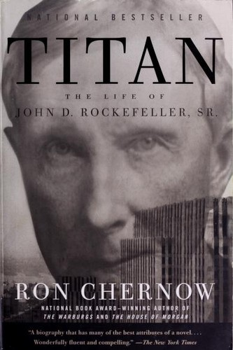

罗恩·切尔诺（Ron Chernow）是美国传记写作的集大成者，以笔触兼具史学严谨与文学可读性著称。他的名字与多部传世之作绑定在一起：《摩根财团》《华盛顿》《格兰特》……而《泰坦》是其中第一部，也是令他一举成名的奠基之作。此书出版于1998年，是迄今为止最为权威的洛克菲勒传记，切尔诺动用了大量此前从未公开的家族档案与私人信件，历经数年研究完成。约翰·D·洛克菲勒（John D. Rockefeller Sr.，1839—1937）在世九十七年，经历了从内战前的贫困农家到创建标准石油（Standard Oil）、再到晚年因垄断遭政府拆分的全部过程。他是美国历史上第一位亿万富翁，也可能是迄今为止世界上相对财富最高的个人——估计其高峰期财富约占当时美国GDP的1.5%。
《泰坦》的叙事核心是洛克菲勒其人的复杂性。他对商业竞争毫不留情——通过秘密折扣、价格战与并购强制手段，在短短数年内将美国炼油业近九成产能纳入标准石油旗下。他同时又是一位严格自律的浸礼会信徒，记录每一笔零花钱、从青年时代起便将收入的十分之一捐给教会。切尔诺挖掘出大量关于洛克菲勒商业手腕的一手史料，包括他如何在谈判中运用沉默、如何通过信息不对称压制对手，也揭示了他不为人知的家族侧面——与妻子赛蒂（Cettie）长达数十年的相互依赖、对子孙后代慈善传统的有意构建，以及他如何在舆论的强烈敌意中始终保持内心的笃定与坚忍。书中同样着墨甚多的是洛克菲勒对现代慈善事业的开创性贡献：他创建了芝加哥大学，资助建立了洛克菲勒大学，并在晚年通过洛克菲勒基金会将财富的大部分系统性地回馈社会。
查理·芒格曾在伯克希尔股东大会上专门提及此书，称其为"我读过的最好的商业传记之一——关于商业，也关于家族，是一本精彩绝伦的书"。芒格特别欣赏切尔诺将洛克菲勒的商业天才与道德复杂性同等对待的写作视角：不为主人公辩护，也不将其妖魔化，而是尽量还原一个在特定历史环境中以特定方式行事的真实人物。《柯克斯书评》（Kirkus Reviews）写道，切尔诺"以罕见的客观与文学优雅……为我们奉献了迄今最为详尽、平衡且心理洞察深刻的洛克菲勒肖像"。
对于关注商业与投资的读者，《泰坦》提供的不只是一段历史，而是一个关于竞争策略、行业整合与复利逻辑的长篇案例研究。洛克菲勒的标准石油展示了一旦控制了某个行业的基础设施枢纽，规模优势可以产生多大的自我强化效应——这一逻辑在石油管道时代与互联网平台时代惊人地相似。书中关于洛克菲勒早年记账习惯、成本控制执念与现金流管理的细节，与任何当代价值投资者的思维都能形成直接共鸣。芒格常说，理解商业史比阅读财务报表更能训练商业直觉；《泰坦》或许是这个观点最有力的佐证之一。